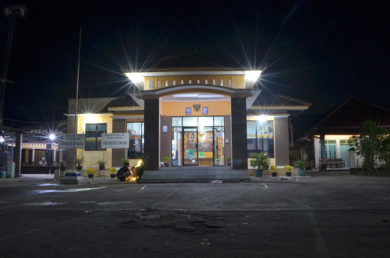
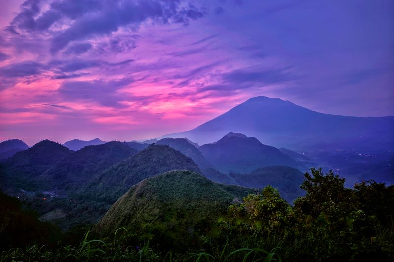
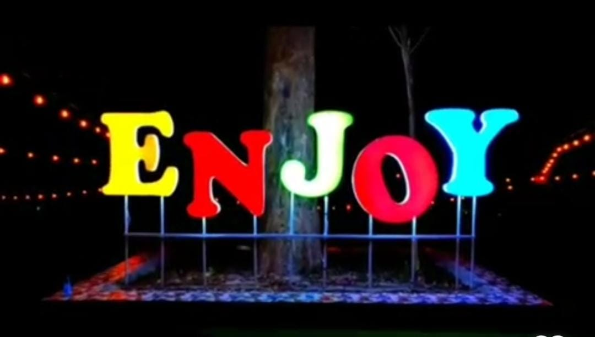
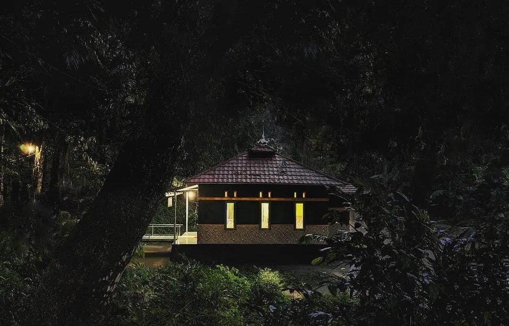

Sejarah Desa

Diceritakan oleh seorang tokoh masyarakat desa Leuwikujang yaitu Alm. Bapak Lebe Zaenudin semasa hidupnya bahwa
pada bad Ke-17 ada pendukuhan kecil dibawah gunung sebut saja DUKUH LEUWIBADAK yang merupakan cikal bakal terbentuknya
desa Leuwikujang yang saat ini merupakan wilayah bagian dari kekuasaan kerajaan islam Cirebon. Seiring dengan
perkembangan penduduk dukuh tersebut telah memenuhi syarat untuk dibentuk desa salah satu syarat diantaranya harus
ada balai pertemuan atau tempat musyawarah dan masjid untuk sarana tempat ibadah. Saat itu yang menjadi kepala kampung
atau yang dipertua adalah “KI BUYUT SANGGAN”.
Ketika Ki Buyut Sanggan turun gunung hendak mencari tempat yang tepat untuk membangun balai desa dan masjid saat
melintas di sungai Ciwaringin dimalam hari melihat secercah cahaya yang dikeluarkan dari sebilah keris pusaka
kujang dan disekitar tempat itu Ki Buyut Sanggan membangun balai desa disampingnya membangu masjid dan wilayah
tersebut diberi nama “DESA LEUWIKUJANG” yang artinya Leuwi adalah bagian sungai yang dalam/kedung dan kujang adalah
sebauh pusaka dizaman kerajaan padjadjaran yang mempunyai keistimewaan yang luar biasa. Pada saat ini masih ada orang
secara kebetulan melihat dimalam hari cahaya/sinar dari pusaka kujang disekitar sungai ciwaringin bahkan menemukannya
namun tidak bertahan lama sebab pusaka tersebut bias datang dan pergi secara tiba-tiba. Bentuk pusaka kujang diabadikan
dalam bentuk ornamen hiasan dipintu gerbang balai desa untuk mengenang sejarah, atas inisiatif/perakarsa
kuwu Iim Ibrahim (Kuwu Ke-16 di Desa Leuwikujang).
Adapun kuwu definitif yang pernah memimpin Desa Leuwikujang menurut alur sejarah adalah:
| No |
Nama Kuwu |
Tahun Menjabat |
Ket. |
| 1. |
Bapak SANGGAN |
1721 - 1756 |
- |
| 2. |
Bapak SAREM |
1757 - 1782 |
- |
| 3. |
Bapak MINA |
1783 - 1810 |
- |
| 4. |
Bapak RAYA |
1811 - 1844 |
- |
| 5. |
Bapak KARNAWI |
1845 - 1878 |
- |
| 6. |
Bapak MUAY |
1879 - 1911 |
- |
| 7. |
Bapak D.MARTADIRAKSA |
1912 - 1942 |
- |
| 8. |
Bapak ENTJING SYAHRI |
1944 - 1950 |
- |
| 9. |
Bapak JIMUN DARMA |
1951 - 1955 |
- |
| 10. |
Bapak H AMBYAH |
1957 - 1966 |
- |
| 11. |
Bapak KARTAWI |
1967 - 1973 |
- |
| 12. |
Bapak SALEH KOSASIH |
1975 - 1977 |
- |
| 13. |
Bapak IWAN SETIAWAN |
1983 - 1984 |
- |
| 14. |
Bapak RANTAWI |
1987 - 1993 |
- |
| 15. |
Bapak UDIN SAMSUDIN |
1996 - 2004 |
- |
| 16. |
Bapak H IIM IBRAHIM |
2004 - 2014 |
- |
| 17. |
Bapak H JUHAENI |
2014 - Sekarang |
- |
Dasar Penetapan Nama Dusun
Di dekade pertengahan 90an ada perubahan nama dari Blok/Dukuh/ Kampung/ Banjar menjadi DUSUN, tetapi ada juga yang masih tetap menggunakan nama tersebut. Untuk menetapkan nama Dusun di Desa Leuwikujang maka dilakukan musyawarah dengan hasil :
1. Dusun Muara
Kata Muara berarti pertemuan antara sungai dengan laut. Nama Dusun Muara diambil dari nama sebüah tempat, yaitu pertemuan antara Sungai Ciwaringin dan Sungai Cijejeng. Muara dahulu merupakan tempat yang sakral sehingga ada tradisi yang tersirat mungkin sampai sekarang masih ada yang meyakini untuk melakukan ritual adat yakni mandi di muara dan ada yang sengaja mengambil air mulang dari muara tersebut untuk keperluan adat, Itulah sebagai dasar penetapan penamaan Dusun Muara.
2. Dusun Majapahit
Nama sebuah hamparan sawah sebelah barat desa Leuwikujang yang berbatasan dengan Desa Heuleut.
Di sana ada sebuah tempat yang ditumbuhi pohon ki serut dekat aliran sungai Cikadongdong terdapat 4 makam/ kuburan yang konon merupakan petilasan keluarga Kerajaan Sunda yang pernah singgah di tempat itu yakni :
- Makam Nyi Mas Dewi Wulan Sari
- Makam Nyi Mas Damar Wulan
- Makam Pangeran Jalendra
- Makam Pangeran Pawongan
setelah berkunjung dari kerajaan Majapahit di tatar wetan sehingga tempat tersebut dinamai Buyut Majapahit / Buyut Ki Serut yang lebih dikenal dengan nama MAJAPAHIT Di lokasi makam petilasan tersebut konon katanya secara kebetulan ada yang mendengar suara ringkikan kuda sembrani. lokasi tersebut belum dilakukan penugaran/ direvitalisasi karena lokasi tersebut di tanah milik warga. Dari tempat tersebut nama Dusun Majapahit ditetapkan.
3. Dusun Sumur Bandung
Diambil dari sebuah lokasi situs mata air yang konon pada saat itu ada keluarga Kerajaan Sunda dari Tatar Kulon yang melintas di tempat tersebut dalam keadaan hamil tua dan sesegera melahirkan. Dalam perjalanannya, rombongan merasa sangat haus dan kesulitan air untuk minum. Pada saat kesusahan tersebut ada wangsit (petunjuk) dari tetua/Buyut Kuningan bahwa di tempat dekat mereka duduk terdapat gundukan batu setelah diangkat batu itu ternyata seperti sebuah sumur kecil /bebelik dan terlihat airnya sangat bening. Demikian cerita singkat tersebut yang akhirnya nama mata air itu dinamai SUMUR BANDUNG.
Alhamdulillah situs Sumur Bandung tengah ditatakelola sebagai salah satu lokasi wisata dan telah ditetapkan Juru Kunci (Kuncen) untuk mengelola dan merawat situs tersebut. Jadi Dusun Sumur Bandung diambil dari nama situs tersebut yang meliputi seluruh wilayah timur sungai Ciwaringin.
Geografis Desa
Luas wilayah Desa Leuwikujang adalah 284.798 Ha yang terdiri dari 213.29 Ha atau 2.132.936 m2 tanah desa/wilayah administratif desa
dan 71.5 Ha tanah kehutanan (Perum Perhutani) dengan ketinggian wilayah pemukiman 68.90 - 108.70 mdpl. (rata-rata ketinggian 87 mdpl) Dengan kemiringan
25°(Derajat). Dengan batas:
| Sebelah Utara |
: Desa Leuwimunding & Desa Mirat |
| Sebelah Timur |
: Desa Cipanas Dukupuntang Cirebon |
| Sebelah Selatan |
: Desa Balagedog (Kec.Sindangwangi), Desa Rajawangi, Desa Nanggerang |
| Sebelah Barat |
: Desa Heleut & Desa Nanggerang |
Wisata Desa
Bukit Sanghyangdora Camp Ground

Kabupaten Majalengka dikenal dengan kekayaan wisata alamnya. Di sana banyak tempat
wisata yang bisa dikunjungi, salah satunya objek wisata Bukit Sanghyang Dora. Objek wisata yang berlokasi di Desa Leuwikujang, Kecamatan Leuwimunding,
memiliki pesona alam yang indah. Di sana pengunjung akan disuguhkan
pemandangan barisan bukit yang menawan, ditambah dengan kemegahan
Gunung Ciremai dari kejauhan. Karena keindahan alamnya, Bukit Sanghyang Dora
kerap disandingkan oleh pengunjung dengan wisata Raja Ampat yang ada di Papua.
Wisata tersebut memang dijuluki sebagai Raja Ampatnya Majalengka. Bahkan,
julukan itu telah melekat kuat sejak tiga tahun terakhir.
Taman Bukit Enjoy

Taman Bukit Enjoy merupakan taman wisata buatan yang menawarkan kolam renang, arena bermain dan berteduh, zona selfi, sarana olah raga (volly ball dan senam). gazebo, kantin, family gathering, toilet, musholla, areal parkir. Lokasi ini bisa digunakan untuk partai besar seperti keluarga, kantor, sekolah, perusahaan dan lain sebagainya.
Situs Cibaringkeng

Situs Cibaringkeng yaitu sebuah kolam alam yang terdapat lokasi mata air dengan warna-warni ikannya yang airnya dipergunakan untuk kebutuhan air bersih warga dan mengairi sawah di hamparan sawah Cibaringkeng dan tempat itu dikeramatkan yang pengelolaannya dipegang oleh juru kunci (kuncen).
Seni & Budaya Desa
1. Seni Genjring & Atraksi
Seni ini muncul di era 1960an awal dengan penampilannya yang cukup memukau baik gamelannya maupun
penampilan atraksinya diantaranya seni bermain payung dan dudukuy (Caping), Seni berjalan
di atas tambang, Seni memainkan air dan banyak seni lainnya.
2. Seni Reog
Seni ini muncul di tahun 1970an dengan mempunyai grup seni reog dan terdapat dua grup seni reog yang
dilengkapi dengan lawakannya dan kepiawan dalam memainkan reog sehingga dapat menghibur penontonnya. Grup
seni reog tidak bertahan lama karena kalah saing dengan seni lain dari cirebon dan indramayu.
3. Seni Kuda Pencak / Kuda Renggong
Seni kuda pencak / kuda silat awalnya hanya kesenian biasa yaitu untuk acara ngelar (keliling) dan diselingi dengan atraksi pencak kuda renggongnya dan lama kelamaan atraksinyapun semakin unik dan variatif sehingga semakin banyaknya undangan untuk mengisi di acara hajatan.
Grup seni ini sudah terorganisir dengan baik dengan nama Seni Kuda Pencak BUDAYA MEKAR GROUP, dari tahun ke tahun grup seni ini mengalami peningkatan dan kemajuan. dengan atraksi kudanya dan seni pencaknya kambing si Ucil ditambah dengan seni panggungnya (seni campur sari) maka lengkaplah seni yang disuguhkan.
Penampilan seni kuda pencak ini bisa untuk acara hajatan baik khitanan perorangan maupun khitanan masal, ulang tahun atau acara umum lainnya.
Dengan peralatan pendukung yang lengkap, grup seni ini sudah tidak diragukan lagi dalam setiap penampilannya sehingga selain mengisi di acara hajatan, seni kuda pencak/kuda renggong ini biasa tampil di acara kegiatan desa dan acara bnesar nasional juga sering mengikuti even-even lomba/kontes baik tingkat kabupaten maupun propinsi.
4. Seni Genjring Dangdut
Seni genjing yang bernama SEYEG GRUP adalah jenis kesenian buhun dan merupakan bentuk kesenian yang sebelumnya sering muncul di Desa Leuwikujang sebagai kesenian warisan dan menjadi turun menurun.
Grup seni genjring ini merupakan napak tilas dari seni genjring sebelumnya dengan penampilannya hampir persis dengan seni akrobat dan seni debus tetapi dari suguhan musiknya dengan gamelan genjring yang disesuaikan dengan zaman sekarang ini yaitu seni musik dangdut dan panturaan ditambah seni klasikan.
Seni genjring ini selain tampil di acara ngelar, acara hajatan, acara keagamaan dan acara desa / kecamatan juga menjadi grup seni untuk kegiatan obrog di bulan Ramadhan serta sering tampil di event seni dan budaya tingkat kabupaten dan acara penampilan seni lainnya.
5. Seni Singa Depok
Seni Singa Depok ini masih baru seumur jagung dan belum banyak berkifrah / pentas di event bergengsi seperti halnya seni kuda pencak/kuda renggong atau seni genjring seyeg grup, kesenian ini pentas masih di kegiatan lokal baik tingkat desa maupun kecamatan pada acara-acara tertentu.
6. Seni Burok
Seni burok Desa Leuwikujang dalam sepak terjang dan eksistensinya tidak jauh berbeda dengan seni singa depok, karena sama-sama terorganisir dengan baik. masih dibilang baru dan belum terorganisir dengan baik.
7. Seni Budaya Islami (Keagamaan)
Leuwikujang pernah melahirkan kreasi seni Islami yang hit dan populer sampai akhir tahun 1990an dan pernah mencapai puncaknya / masa keemasan dengan banyaknya tawaran show/manggung di setiap even.
Seni atau kesenian Islam sudah ada sejak tahun 1980an, kesenian Islami ini berawal dari para santri yang mengaji di pesantren almagfurlah Bpk. KH Abdul Aziz yaitu kesenian qasidah rebana remaja puteri NURUL AZIZ, dari sanalah awal mula masyarakat Leuwikujang mengenal seni Islami. Seni qasidah rebana ini berkembang pesat dan sering mengisi di acara hajatan, malam resepsi 17 Agustusan, HUT / disnatalis Himpunan Putra Kujang (HPK) waktu itu dan acara-acara yang lainnya.
Karena perkembangannya yang cukup baik selain alat musik rebana dilengkapi dengan gitar dan keyboard (sekarang organ) sehingga semakin enak untuk didengar dan dinikmati. Dari perjalanannya itu Grup qasidah puteri NURUL AZIZ sering diminta untuk mewakili Kecamatan Leuwimunding untuk lomba Qasidah Rebana tingkat Kabupaten Majalengka dan dua kali meraih juara yaitu juara harapan 3 tahun 1981 dan juara harapan 1 tahun 1983, kemudian bermunculanlah grup qasidah rebana di tiap-tiap desa dengan adanya lomba tersebut termasuk grup Qasidah Modern.
Puncak pencapaian masa emasnya grup qasidah rebana puteri NURUL AZIZ ini pada tahun 1993 yang merupakan generasi kedua yakni mengikuti festival qasidah rebana tingkat nasional di Taman Mini Indonesia Indah (TMII) Jakarta sebagai Duta Jawa Barat dan memperoleh kesempatan tampil di hadapan Ibu Presiden Republik Indonesia Ibu Tien Soeharto.
Grup Qasidah Rebana Nurul aziz ini adalah personil Ikatan Remaja Masjid (IREMA) Nurul Kirom Desa Leuwikujang.
Sebagai bentuk apresiasi terhadap grup qasidah rebana puteri Nurul Aziz ini pada saat launching/gunting pita Masjid Jami NURUL KIROM pada tahun 1996 mendapat kehormatan untuk tampil penuh pada acara tesebut. Dari penampilannya mendapat aplauss yang cukup baik dari warga masyarakat yang hadir menyaksikan.
Sekitar tahun 1998 sampai sekarang grup qasidah rebana puteri Nurul Aziz ini sudah tidak aktif lagi karena usia personal dan kesibukan serta banyak yang tinggal di luar wilayah. Di akhir era 90an sebagai penerima estafet, selanjutnya seni qasidah rebana ini diteruskan oleh siswi MIPUI Leuwikujang. Sekarang......... entahlah!
Di warsa 2010an seni Islami Desa Leuwikujang bangkit lagi dengan kemunculan grup-grup hadirah sebut saja ada Jamuro (Jamaah Muji Rosul), El Kaaf (Ibu-ibu Jamiyah Al Kaafiyah). Akhun Fillah (Santri PP Raudlatul Mubtadiin), IREMA Nurul Kirom, El Famili, Al Hidayah dan lain-lain.
Seni Hadlrah ini biasa tampil di acara keagamaan, acara nasional, acara syukuran hajatan baik pernikahan maupun khitanan dengan dilengkapi alat musik lainnya seperti organ. gitar, seruling dan sebagainya.
Seni Islami lainnya yaitu seni genjring nyambut/ngarak calon
pengantin pria sebagai kesenian pengganti LENGSER, yang merupakan seni lantunan sholawatan diiringi musik rebana. Seni ngarak pengantin ini sudah ada dan berkembang dari
jaman dahulu kala, jenis kesenian ini dimainkan oleh remaja laki-laki atau bapak-bapak.
Hingga sekarang ini seni Hadirah maupun seni ngarak calon pengantin masih berjalan dan terus dilestarikan oleh kaum milenial yakni oleh Ikatan Remaja Masjid (IREMA) Nurul Kirom Desa Leuwikujang.